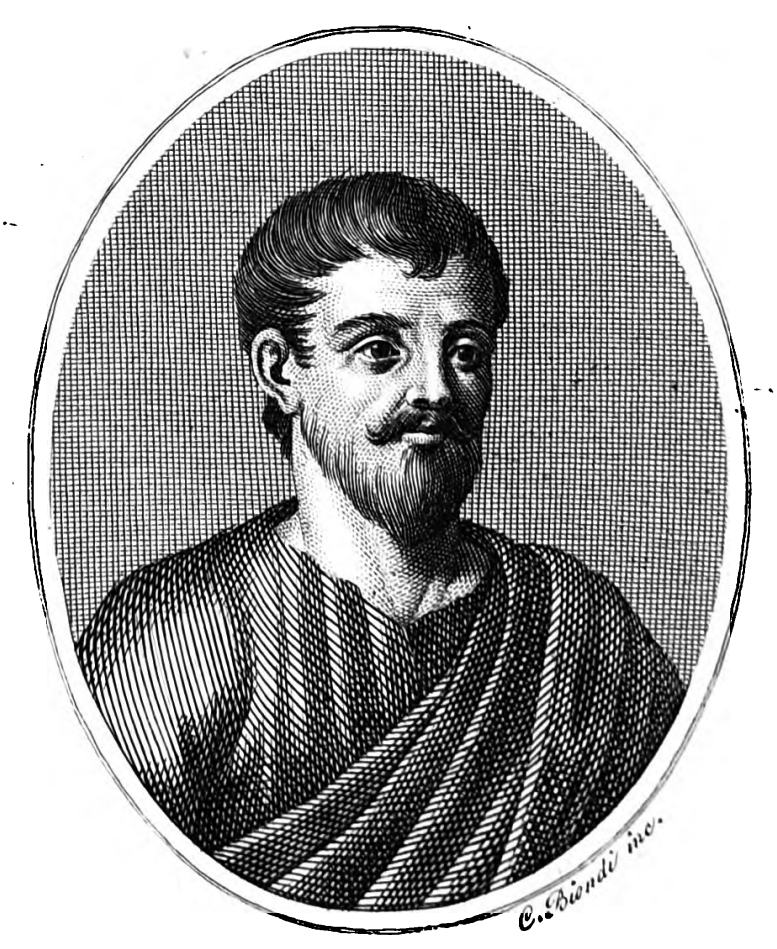

Who Was Gorgias of Leontini?
Gorgias of Leontini was an ancient Greek philosopher and rhetorician who lived approximately from the early fifth to the early fourth century BCE. He is traditionally regarded as one of the most influential figures among the sophists, the itinerant teachers of Classical Greece who instructed students in argument, persuasion, and public speech.
Gorgias is especially associated with exploring the limits of human knowledge and the extraordinary power of language to shape belief. Rather than proposing a positive metaphysical system, the arguments associated with him challenge whether reality can be known or communicated at all.
He arrived in Athens in 427 BCE as part of a diplomatic mission from his native Leontini in Sicily, and his dazzling style of speech is said to have made a powerful impression on the Athenian public. His surviving works, including On Non-Existence, the Encomium of Helen, and the Defence of Palamedes, remain central sources for understanding sophistic thought.
Because ancient sources vary and much of his output is fragmentary, historians treat his biography and doctrines with appropriate caution. His lasting importance lies in his role as a founding figure of rhetorical theory and as a provocative early voice questioning the relationship between language, truth, and reality.
Gorgias of Leontini: Quick Facts
- Name — Gorgias of Leontini
- Period — Approximately 483–375 BCE
- From — Leontini, a Greek city in Sicily
- Philosophical period — Classical Greek philosophy
- Associated with — Sophism and rhetoric
- Known for — On Non-Existence, the Encomium of Helen, and the art of persuasive speech
- Teaching focus — Rhetoric, argument, and the power of language
- Surviving works — Fragments and two complete speeches
- Notable students — Isocrates and other orators
- Historical importance — A founding figure of Greek rhetorical theory
Gorgias of Leontini and the Rise of the Sophistic Movement

Gorgias lived during the fifth century BCE, when the Greek world was experiencing major political, intellectual, and cultural developments. In democratic Athens especially, success in public life often depended upon the ability to speak persuasively before assemblies, law courts, and other civic audiences. Gorgias was roughly contemporary with major figures including Protagoras and Socrates, although their approaches to philosophy and public argument were significantly different.
The thinkers commonly called the Sophists were not a single philosophical school with one shared doctrine. They included professional teachers and intellectuals who offered instruction in subjects such as rhetoric, argumentation, language, civic excellence, and practical wisdom, often in return for payment. Their activities became especially important in Greek cities where public speaking and argument played a major role in political and legal life.
Gorgias became particularly famous for demonstrating the extraordinary power of logos, a Greek term that can refer broadly to speech, discourse, or argument. His surviving works suggest that language was not merely a passive instrument for reporting facts about reality. Speech could shape emotion, influence judgment, create belief, and move audiences toward particular decisions or actions.
The importance of Gorgias therefore lies at the intersection of philosophy and rhetoric. His work raised difficult questions about the relationship between words and reality, persuasion and knowledge, and the power that a skilled speaker can exercise over an audience. These questions would later become central to philosophical criticisms of rhetoric, particularly in the writings of Plato. :contentReference[oaicite:0]{index=0}
Who Was Gorgias and What Did He Do?
Gorgias was born in the Sicilian city of Leontini, probably in the early fifth century BCE, and became renowned throughout the Greek world as a public speaker and teacher. Ancient and later traditions portray him as an exceptionally accomplished orator whose prose employed striking patterns of balance, antithesis, rhythm, and sound. Much of his biography is reconstructed from later testimony, so precise details about his life should be treated with appropriate historical caution.
One of the best-known events associated with Gorgias occurred in 427 BCE, when Leontini sent him to Athens as part of an embassy seeking assistance against Syracuse. Ancient tradition presents his appearance before the Athenians as an important moment in his rise to wider fame. His distinctive manner of speaking made a strong impression and helped establish his reputation as one of the great masters of persuasive prose. :contentReference[oaicite:1]{index=1}
Gorgias subsequently became associated with a wider career of travel, public display, and teaching. Like other prominent intellectuals of the period, he could attract students by demonstrating his abilities in carefully constructed speeches and arguments. Ancient accounts also emphasize the wealth and prestige he acquired, although individual anecdotes about his long life and personal character are more difficult to verify than his broader reputation as an influential teacher.
His historical importance should not be reduced to the claim that he simply "invented" rhetoric, since persuasive speech and rhetorical practice existed before him, particularly in Sicily. Gorgias's major significance lies instead in his influence on the development of artistic prose and in his powerful demonstration of how language itself could become an object of systematic intellectual and philosophical reflection. :contentReference[oaicite:2]{index=2}
What Did Gorgias Believe?
Reconstructing Gorgias's philosophy is difficult because only a small body of material associated with him survives, and his most radical philosophical work is known through later reports rather than a complete original manuscript. Nevertheless, the surviving evidence presents a thinker deeply concerned with the relationship between reality, thought, knowledge, and language.
His treatise, usually called On Non-Being or On Nature, is traditionally summarized through three connected claims: that nothing exists; that even if something existed, it could not be known by human beings; and that even if it could be known, that knowledge could not be communicated successfully to another person. The arguments survive in different later accounts, making their exact reconstruction and interpretation a continuing scholarly problem.
These claims should not automatically be interpreted as a simple declaration that Gorgias literally believed reality does not exist. Scholars have debated whether the work expresses a serious metaphysical position, a skeptical challenge to philosophical claims about being, or a highly sophisticated rhetorical and argumentative exercise that turns the methods of earlier philosophers against themselves. Its relationship to Parmenides and Eleatic philosophy is especially important in many interpretations. :contentReference[oaicite:3]{index=3}
Whatever its ultimate purpose, the work exposes a fundamental problem: even if a person thinks they have grasped reality, how can they prove that their thought corresponds to what exists, and how can they transfer that knowledge directly into another person's mind? Gorgias therefore became an important early figure in philosophical reflection on the limits of knowledge and on the gap between things, thoughts, and words.
What Is Gorgias's Sophism?
Sophism refers broadly to an intellectual and educational movement associated with prominent teachers of Classical Greece. The Greek word sophistes originally had a broader and less automatically negative meaning than the later English word "sophist," referring generally to someone regarded as skilled, wise, or knowledgeable. The historical Sophists differed considerably from one another in their interests and philosophical positions.
Gorgias became one of the figures most closely associated with this movement because of his teaching and public demonstrations of persuasive speech. He showed that arguments could be constructed with remarkable power and elegance, even when the position being defended was unconventional or difficult. His display speeches therefore served not only as literary performances but also as demonstrations of what skilled argumentation could accomplish.
It is misleading, however, to suggest that all Sophists simply cared about winning arguments regardless of truth. The Sophistic movement included diverse thinkers who investigated language, morality, knowledge, politics, and education in different ways. Gorgias represents a particularly important strand within this wider movement: one concerned with the power of language and persuasion and with the difficulty of establishing an unquestionable connection between speech and reality. :contentReference[oaicite:4]{index=4}
For this reason, it is often more accurate to understand Gorgias as an influential rhetorician and Sophistic intellectual than to force his thought into a single systematic philosophical doctrine. His surviving works are especially valuable because they demonstrate philosophical ideas through argument and performance, making the very act of persuasion part of the subject under examination.
What Is Rhetoric in Gorgias's Philosophy?
Rhetoric, broadly understood as the art and practice of persuasive speech, occupies a central place in the intellectual tradition associated with Gorgias. He became famous for a highly distinctive prose style and for demonstrating the ability of carefully arranged language to influence an audience. His importance lies not merely in teaching people to speak, but in revealing how profoundly speech can affect human thought and action.
For Gorgias, speech was not simply a neutral vehicle for conveying information about an already known reality. In the Encomium of Helen, he presents logos as a powerful force capable of producing fear, pleasure, pity, and other emotional responses. He famously compares the effects of speech on the soul to the effects of drugs on the body, emphasizing that language can both influence and transform those who receive it. :contentReference[oaicite:5]{index=5}
This conception of rhetoric raises an important philosophical issue. If speech can shape belief without necessarily providing knowledge, then persuasion and truth cannot simply be treated as identical. A skilled speaker may convince an audience through emotional force, probability, style, or argument even when the audience lacks direct knowledge of the subject under discussion.
Gorgias's reflections on language therefore helped establish a problem that would remain central to later philosophy: what is the ethical and intellectual status of persuasion? Plato would criticize rhetoric when separated from knowledge and truth, but the extraordinary power of speech demonstrated by Gorgias ensured that rhetoric itself could no longer be ignored as a serious subject of philosophical investigation. :contentReference[oaicite:6]{index=6}
Gorgias and the Argument of On Non-Existence
On Non-Existence, also known as On Nature or On the Non-Existent, is Gorgias's most philosophically provocative work. The original complete text has not survived, and modern understanding depends primarily on two later accounts that differ in presentation and detail. Any reconstruction of the argument must therefore distinguish the surviving evidence from later interpretation.
The first major claim argues, in effect, that attempts to establish what genuinely exists lead to logical difficulties. Gorgias examines the competing possibilities of being and non-being and exploits the conceptual problems involved in explaining how anything could exist. The argument deliberately engages questions that had been central to earlier Greek metaphysics, especially the philosophical legacy of Parmenides and the Eleatic tradition.
The second and third stages move from being to knowledge and then from knowledge to communication. Even if something exists, Gorgias asks whether the human mind can genuinely know it; and even if one person possesses such knowledge, words themselves are not identical with the things or experiences they are intended to communicate. This creates a fundamental gap between reality, thought, and speech. :contentReference[oaicite:7]{index=7}
The work is therefore important even if its extreme conclusions were intended partly as a philosophical parody or rhetorical demonstration. By pushing metaphysical reasoning toward apparently paradoxical conclusions, Gorgias tested the confidence of philosophers who believed that logical argument could provide a secure and complete account of reality. The treatise remains one of the most striking ancient explorations of the possible limits of knowledge and communication.
The Encomium of Helen: Gorgias on Persuasion and Blame
The Encomium of Helen is one of the best-known works attributed to Gorgias and a celebrated example of Greek display rhetoric. In it, he undertakes the deliberately difficult task of defending Helen of Troy, traditionally blamed in Greek myth for leaving her husband and becoming associated with the events that led to the Trojan War. The speech demonstrates how a powerful argument can challenge an apparently settled moral judgment.
Gorgias considers several possible explanations for Helen's actions. She may have acted because of divine necessity or fate, because she was compelled by physical force, because she was persuaded by speech, or because she was overcome by love. In each possibility, he argues that Helen's responsibility is reduced or removed because the decisive cause of her action lay in a force stronger than her own voluntary choice.
The discussion of persuasion is particularly important. If Helen was persuaded by powerful speech, Gorgias suggests, then logos exercised a kind of force over her mind. Speech can create beliefs and emotional states that alter judgment, making rhetoric comparable in its effects to a powerful force acting upon the soul. The argument thereby transforms a mythological defence into an exploration of the psychology and power of language. :contentReference[oaicite:8]{index=8}
The speech is generally understood as a display of rhetorical skill, but reducing it to a mere exercise would overlook its philosophical interest. It raises enduring questions about persuasion, responsibility, coercion, emotion, and free choice. By making a traditionally condemned figure appear defensible, Gorgias demonstrates that the way an event is described and argued can profoundly shape how people understand truth, blame, and human responsibility.
Gorgias and the Defence of Palamedes
Defence of Palamedes is Gorgias's other surviving complete speech. It is presented as the legendary Greek hero Palamedes defending himself against a false accusation of treason during the Trojan War. Like the Encomium of Helen, the work takes a familiar figure from Greek tradition and uses the situation to explore the power of carefully constructed argument.
Palamedes responds to the accusation by examining what would have been required for him actually to commit the alleged crime. He considers questions of motive, opportunity, practical possibility, witnesses, communication, and evidence, attempting to show that the accusation cannot be supported by a coherent account of events.
The speech is therefore an important example of forensic reasoning in early rhetorical education. Rather than simply appealing to emotion, Gorgias constructs a systematic defence by asking what evidence would be necessary to establish guilt and whether the circumstances described by the accuser could plausibly have occurred.
Like the Encomium of Helen, the speech functioned partly as a teaching example, showing students how careful argument could be constructed and organized to persuade an audience on a contested question. It demonstrates that rhetorical skill involved not merely speaking beautifully, but analyzing possibilities, exposing weaknesses in an opponent's case, and arranging reasoning into a persuasive form.
Gorgias, Language, and the Limits of Human Knowledge
A major concern associated with Gorgias is the question of whether language can adequately represent or communicate reality to another mind. Human beings encounter the world through their own experiences, perceptions, and thoughts, yet communication requires those private experiences to be expressed through words shared with other people.
The argument attributed to him does not simply replace one philosophical theory with another. Instead, it examines the reasons offered for trusting perception, reason, and speech, and asks whether any of them can guarantee that one person's understanding of reality can be transferred unchanged into the mind of another.
This problem becomes especially significant in the third claim associated with On Non-Existence: even if something could be known, it might not follow that the knowledge could be communicated. A word is not identical with the object it refers to, and hearing the same word does not necessarily ensure that two people imagine or understand precisely the same thing.
This makes Gorgias's thought particularly important for the history of epistemology and philosophy of language, branches of philosophy concerned with knowledge, meaning, representation, and the limits of human communication. His surviving arguments raise enduring questions about whether language gives us direct access to truth or instead mediates reality through the conventions and limitations of speech.
Later rhetoricians and philosophers developed more systematic theories of language and persuasion, but these later developments should not automatically be attributed word-for-word to the historical Gorgias. The surviving evidence is limited, and the precise philosophical conclusions Gorgias himself intended remain subjects of interpretation.
Did Gorgias Develop a Distinctive Style of Speech?
No surviving philosophical system by Gorgias exists in complete form. What survives most vividly instead is his distinctive prose style, which later ancient writers associated with his name. Gorgias helped demonstrate that prose could be shaped artistically and rhythmically, rather than serving only as a plain instrument for conveying information.
The so-called Gorgianic figures include balanced clauses of similar length, rhyming or similar-sounding word endings, antithesis, and elaborate parallel structure. These devices gave speech a patterned and memorable quality, often producing effects closer to poetry while remaining within the medium of public prose.
Such techniques were not merely decorative. Carefully arranged contrasts and repetitions could make an argument easier to remember, intensify its emotional effect, and give a speaker's words an impression of balance and authority. Gorgias therefore illustrates how the form of an argument can influence an audience alongside its explicit logical content.
Later authors, including Aristotle, discussed and sometimes criticized this ornate style, particularly when rhetorical ornament appeared to overwhelm clarity or seriousness. Nevertheless, its influence on the development of Greek prose and formal oratory was widely acknowledged in antiquity.
This is why historians treat Gorgias as important not only for his arguments but for the very texture of his language, which shaped how later Greek writers thought about the artistic possibilities of prose. His example helped establish rhetoric as a discipline concerned with style, arrangement, sound, emotion, and persuasion as well as argument.
Gorgias in Plato's Dialogue Gorgias
Plato's dialogue Gorgias is one of the most important ancient sources discussing the philosophy associated with Gorgias, though it must be read carefully as a philosophical composition by Plato rather than a direct historical transcript. The dialogue uses Gorgias as a central figure in a broader examination of rhetoric, political power, justice, and the nature of the good life.
In the dialogue, the character Gorgias and his associates debate with Socrates about the nature of rhetoric, asking whether persuasive speech aims at truth and justice or merely at producing belief and gratifying an audience regardless of what is right. Socrates presses the question of whether a rhetorician must genuinely know the subjects about which he persuades others.
The dialogue therefore presents a fundamental distinction between knowledge and persuasion. A speaker may be capable of convincing an audience without possessing expert knowledge of the matter under discussion, raising difficult questions about the ethical responsibility of those who possess exceptional persuasive power.
The testimony attributed to the dialogue presents rhetoric as a skill that can be used for good or ill, raising enduring questions about the relationship between persuasion, knowledge, and ethics. These questions remain relevant wherever public speakers attempt to shape political opinion, legal judgment, or collective action.
Modern scholars continue to debate how closely Plato's portrayal reflects the historical Gorgias's own views, since Plato was often critical of sophistic rhetoric more broadly. The dialogue is therefore invaluable for understanding Plato's philosophical response to rhetoric, while remaining an indirect and interpretive source for the biography and doctrines of the historical Gorgias.
What Is the Difference Between Gorgias and Other Sophists?
Gorgias of Leontini was one of several prominent sophists active in fifth-century BCE Greece. Protagoras , by contrast, is best known for claims about the relativity of truth to the individual, summarized in the famous formula that "man is the measure of all things." Although both figures belonged to the broader sophistic movement, their surviving ideas reveal different philosophical interests and emphases.
Protagoras is more directly associated with questions concerning human judgment, relativism, civic education, and the teaching of virtue. Gorgias, by comparison, became especially famous for rhetoric and for arguments concerning the relationship between being, knowledge, and language.
While Protagoras focused more directly on questions of relative truth and civic virtue, Gorgias concentrated more intensely on the persuasive and almost magical power of language itself, treating speech as a force capable of shaping belief and, in some circumstances, overwhelming ordinary judgment.
The distinction matters because grouping all sophists together can obscure real differences in emphasis and argument. The term sophist describes a broad and historically diverse group of teachers rather than a single philosophical school possessing one universally accepted doctrine.
Gorgias is best understood as a specialist in rhetoric and the philosophy of language whose radical skeptical arguments and brilliant prose style secured him a distinctive place among the sophists. His importance lies precisely in the unusual combination of philosophical paradox, rhetorical theory, and literary experimentation found in the works and arguments associated with his name.
How Did Gorgias's Rhetorical Method Work?
The method associated with Gorgias involved constructing arguments for a given position using structured reasoning, vivid imagery, and carefully balanced language. His surviving speeches demonstrate how a speaker could begin with a difficult or controversial position and develop a persuasive case by examining causes, alternatives, motives, and possible objections.
Rhetorical training also required attention to the particular audience and situation in which an argument was delivered. A persuasive speech needed more than abstract reasoning: its language, structure, emotional appeal, and presentation could all influence how an audience received and evaluated what was being said.
This practice is sometimes described as dissoi logoi, or "opposing arguments," meaning that a skilled speaker could construct persuasive cases on either side of a contested question. However, the broader tradition of arguing opposing positions should not be treated too simply as a technical doctrine uniquely established by the historical Gorgias.
The sophistic teacher did not necessarily begin with the dogmatic claim that a particular conclusion was true. Instead, rhetorical training could emphasize the capacity to examine competing positions, identify the strengths and weaknesses of an argument, and understand how different forms of reasoning might persuade an audience.
This rhetorical practice became one of the most influential forms of ancient argumentative training and later contributed to discussions about logic, ethics, education, and the responsible use of persuasive language. The enduring philosophical question raised by Gorgias's example is whether mastery of persuasion should be understood simply as a technical skill or whether it must also be governed by knowledge, truth, and moral responsibility.
Did Gorgias See Persuasion as a Form of Power?
Sophistic rhetoric should not simply be understood as decoration added to ordinary speech or as a claim that words have no real effect on the world. In the thought associated with Gorgias, language possesses a practical power because human beings form beliefs, make decisions, and experience emotions partly through the speeches and stories they hear.
Gorgias's surviving speeches describe persuasive language as something close to a physical force, capable of altering a listener's soul the way a drug alters the body, for better or for worse. This famous comparison emphasizes that speech can produce powerful effects even though words themselves have no physical force in the ordinary sense.
For example, a speaker may use rhythm, imagery, repetition, and structured argument to move an audience toward pity, anger, fear, or conviction, without the audience necessarily being able to trace exactly how their judgment was changed. Persuasion can therefore work through both rational argument and the emotional response generated by the form and presentation of language.
This view allowed Gorgias to explain both the remarkable civic value of skilled oratory and its potential dangers when used to mislead rather than inform an audience. The power to influence belief is not automatically good or bad; its ethical significance depends partly on how the speaker uses that power and for what purposes.
Gorgias's conception of persuasive speech therefore raises a question that remains central to rhetoric and political philosophy: when words possess the power to shape another person's judgment, what responsibilities should accompany the ability to persuade?
Gorgias's Influence on Later Rhetoric and Philosophy
Gorgias's name became attached to a tradition of rhetorical education that continued long after his lifetime. His public performances, speeches, and distinctive methods of composition helped demonstrate that rhetoric could be treated as a disciplined subject requiring study rather than merely as a natural talent for speaking.
His influence was particularly important in the development of Greek prose style. Later speakers and writers continued to experiment with balanced clauses, antithesis, parallel structure, and other techniques associated with Gorgianic language, adapting them to changing literary and political contexts.
Isocrates, an influential Athenian teacher of rhetoric, belongs to the broader intellectual world shaped by earlier sophistic education, although his own educational philosophy and prose style should not simply be identified with the teachings of Gorgias. Later rhetorical traditions likewise preserved and transformed techniques associated with Gorgianic composition.
Gorgias's philosophical importance also extends beyond questions of style. The arguments associated with On Non-Existence continued to provoke reflection about the relationship between reality, thought, knowledge, and language, even though the original work survives only indirectly through later testimony.
Gorgias's works are therefore extremely important for understanding the early history of rhetoric and philosophical skepticism, though later stylistic developments should not be mistaken for the surviving fragments of Gorgias himself. His legacy is best understood as both direct and indirect: a limited body of ancient evidence combined with a much larger tradition that developed from the possibilities his rhetoric helped reveal.
Gorgias of Leontini: Main Philosophical Ideas
Because much of the evidence for Gorgias is fragmentary, his philosophical ideas must be presented with appropriate historical caution. Nevertheless, the surviving speeches and later reports allow several major themes to be identified, particularly concerning skeptical argument, persuasion, language, and the artistic power of rhetorical expression.
Skeptical Argument
Gorgias is associated with a radical philosophical argument questioning whether anything exists, can be known, or can be communicated. The precise purpose of this argument remains disputed, but it directly challenges confidence in the apparently secure relationship between reality, human thought, and speech.
The Power of Rhetoric
Gorgias treated persuasive speech as a psychological force capable of shaping belief and emotion, comparing its effect to that of a powerful drug. His Encomium of Helen demonstrates this idea by treating speech as a force capable of influencing human judgment and action.
Opposing Arguments
Sophistic training associated with Gorgias emphasized the ability to examine and construct persuasive cases on contested questions. This rhetorical practice encouraged speakers to analyze alternative explanations, possible objections, motives, evidence, and the relative strengths of competing positions.
Artistic Prose Style
The so-called Gorgianic figures gave Greek prose a new musical and poetic quality through balance, antithesis, parallel structure, and carefully patterned sound. These techniques demonstrated that the persuasive force of speech could depend partly on how language was arranged as well as on the ideas explicitly expressed.
Questioning Certainty in Language
Gorgias's thought encourages philosophers to examine whether language can ever fully capture or transmit truth between minds. If words are different from the things they describe and from the private experiences of individual speakers, communication may always involve interpretation rather than the perfect transfer of knowledge.
What Do We Actually Know About Gorgias?
Gorgias is a good example of the difficulties involved in studying ancient sophists whose complete works have mostly not survived. Modern knowledge of his life and thought depends upon a combination of surviving speeches, fragments, references by other ancient authors, and later reports that do not always provide enough evidence to settle every historical or philosophical question with certainty.
Relatively Well-Attested
- Gorgias was born in Leontini, a Greek city in Sicily.
- He led a diplomatic mission to Athens in 427 BCE.
- He became an important teacher of rhetoric across the Greek world.
- His speeches the Encomium of Helen and the Defence of Palamedes survive in complete form.
- His distinctive prose style was widely discussed by later authors, including Aristotle.
Traditionally Reported
- The exact dates of his birth and death.
- Various anecdotes describing his confidence and long life.
- The full content of his treatise On Non-Existence, known mainly through later summaries.
- Details of his personal wealth earned from teaching.
Uncertain or Disputed
- Whether On Non-Existence was a sincere argument, a rhetorical exercise, or a parody of Eleatic philosophy.
- The precise relationship between Gorgias's own teaching and Plato's portrayal of him in the dialogue Gorgias.
- The extent to which his views on truth aligned with those of other sophists such as Protagoras.
- Whether all anecdotes about his life accurately describe historical events.
Gorgias Compared with Socratic and Eleatic Philosophy
Gorgias lived during the same broad Classical period as Socrates, but the philosophical approaches associated with the two figures were significantly different. The contrast between Socratic inquiry and sophistic rhetoric later became especially important because Plato presented the relationship between truth and persuasion as one of the central philosophical controversies of the period.
Socratic philosophy, as portrayed by Plato, pursued definitions of virtue and knowledge through structured dialogue aimed at examining beliefs and discovering what could be defended as true. Sophistic teaching, including that associated with Gorgias, often placed greater emphasis on practical persuasive skill and the ability to speak effectively within civic and public life.
This contrast should not be reduced to the simple claim that Socrates cared about truth while sophists cared only about deception. Sophistic education included serious questions about argument, language, civic judgment, and human knowledge, while much of the negative image of the sophists was shaped by philosophical opponents such as Plato.
Gorgias's skeptical argument in On Non-Existence also engaged directly with problems raised by the earlier Eleatic tradition associated with Parmenides, which had argued that being is single, unchanging, and knowable through reason alone. The argument associated with Gorgias appears to push some of the logical difficulties surrounding being and non-being toward deliberately radical conclusions.
This difference illustrates the diversity of Classical Greek philosophy: some thinkers sought to establish secure definitions and truths, while Gorgias explored the difficulties involved in reasoning, communication, and persuasion. His position stands at an important intersection between metaphysical debate and the practical study of human language.
Why Is Gorgias of Leontini Important in Philosophy?
Gorgias is important because he became a foundational figure in the history of rhetoric and the philosophy of language. His surviving speeches demonstrate the extraordinary possibilities of persuasive prose, while his name became attached to some of the most striking skeptical arguments of the ancient world.
His philosophical legacy raises a fundamental question about communication: Can language ever fully and reliably convey what one mind knows to another? The question challenges the assumption that speaking and understanding are simple processes in which an idea passes unchanged from one person to another.
Gorgias also forces attention toward the relationship between truth and persuasion. A persuasive argument may influence an audience even when the audience lacks the knowledge needed to evaluate it fully, making rhetorical skill both socially valuable and potentially dangerous.
These questions have remained important throughout the history of philosophy. Later thinkers continued to investigate meaning, persuasion, truth, interpretation, and the ethical responsibilities of skilled speakers, while rhetoric itself developed into a major field concerned with how language influences human judgment.
Gorgias's importance therefore does not depend on resolving every debate about his sincerity or attributing every later rhetorical technique to him directly. His historical significance comes from his place at the founding of rhetorical theory and from his provocative examination of the uncertain relationship between language, knowledge, persuasion, and truth.
Gorgias of Leontini Explained Simply
Gorgias of Leontini was an ancient Greek sophist and rhetorician famous for radical arguments about existence, knowledge, and language, as well as for his brilliant and highly patterned style of speech. He became one of the most influential figures in the early development of rhetoric as a subject that could be consciously studied and practiced.
Instead of simply assuming that philosophical questions always have definite and easily communicated answers, the arguments associated with Gorgias question whether reality can be securely known and whether one person's knowledge can ever be transferred perfectly to another through words. At the same time, his surviving speeches demonstrate how extraordinarily powerful language can be in shaping belief and emotion.
His two complete surviving speeches, the Encomium of Helen and the Defence of Palamedes, remain celebrated examples of early Greek rhetorical argument. Together they show different aspects of his art: the ability to defend an unpopular position and the ability to construct a systematic argument from motives, evidence, and logical possibilities.
Gorgias remains philosophically important because his work connects questions about truth with questions about communication. He reminds us that language is not merely a passive container for ideas: it can influence emotion, shape judgment, and determine how human beings understand both themselves and the world around them.
- Philosopher: Gorgias of Leontini
- Period: Fifth–fourth century BCE
- Tradition: Sophism and rhetoric
- Major work: On Non-Existence
- Central concern: The power and limits of language
- Associated practice: Persuasive rhetoric
- Famous speeches: Encomium of Helen, Defence of Palamedes
- Notable student: Isocrates
A Famous Principle Associated with Gorgias
“Speech is a powerful lord.”
Frequently Asked Questions About Gorgias of Leontini
Who was Gorgias of Leontini?
Gorgias of Leontini was an ancient Greek sophist and rhetorician who lived around the fifth and fourth centuries BCE. He became one of the most celebrated teachers of persuasive speech in Classical Greece and a founding figure of rhetorical theory.
What is Gorgias famous for?
Gorgias is famous for his treatise On Non-Existence, his surviving speeches the Encomium of Helen and the Defence of Palamedes, and his highly influential, ornate style of Greek prose.
What did Gorgias believe?
The exact philosophy of Gorgias is difficult to reconstruct because most of his writings survive only in fragments. Later testimony associates him with a skeptical argument that nothing exists, that existence could not be known, and that knowledge could not be communicated.
What is sophism?
Sophism is a movement of Classical Greek teachers, including Gorgias, who instructed students in rhetoric, argumentation, and the practical skills needed for civic and public life.
What is Gorgias's view of rhetoric?
Gorgias viewed rhetoric as a powerful force capable of shaping belief and emotion, comparing well-crafted speech to a drug that can affect the soul for better or worse.
What is the Encomium of Helen about?
The Encomium of Helen is a speech in which Gorgias defends Helen of Troy against blame for the Trojan War, arguing that she may have been overcome by fate, force, persuasive speech, or love.
What is On Non-Existence?
On Non-Existence is Gorgias's most philosophically ambitious work, known mainly through later summaries, presenting a skeptical argument about being, knowledge, and communication.
Did Gorgias write any books?
Two of Gorgias's speeches, the Encomium of Helen and the Defence of Palamedes, survive in complete form, while his treatise On Non-Existence survives only through later summaries and fragments.
What are the Gorgianic figures?
The Gorgianic figures are a set of stylistic devices associated with Gorgias, including balanced clauses, rhyme-like word endings, and antithesis, used to give Greek prose a musical, persuasive quality.
How is Gorgias different from Protagoras?
Both were prominent sophists, but Protagoras is best known for claims about the relativity of truth to the individual, while Gorgias focused more intensely on the persuasive power of language itself.
Was Gorgias a philosopher or a teacher of rhetoric?
Gorgias is usually described as both. He is remembered as a professional teacher of persuasive speech and as a thinker whose skeptical arguments engaged seriously with earlier philosophical debates about being and knowledge.
Why is Gorgias important today?
Gorgias remains important because the questions associated with his philosophical legacy continue to influence debates about persuasion, communication, media, and the ethical use of language.
Related Ancient Greek Philosophers
Gorgias belongs to the wider tradition of Classical Greek philosophy. Explore philosophers who developed different approaches to knowledge, reality, ethics, and the art of persuasion.
Philosophy Branches Connected to Gorgias
Gorgias's philosophical legacy is particularly important for epistemology, where philosophers investigate knowledge, justification, and the limits of human understanding, as well as for the study of ethics and logic in relation to persuasive argument.
Why Gorgias of Leontini Still Matters
Gorgias did not leave behind a philosophical system comparable to the surviving works of Plato or Aristotle. Much of his philosophical legacy has instead reached us through two complete speeches, scattered fragments, and later testimony from other ancient authors.
Yet the questions associated with Gorgias remain fundamental to philosophy: What power does language have over belief and action? Can truth ever be fully communicated from one mind to another? What responsibilities come with the skillful use of persuasion?
The sophistic tradition he helped shape transformed rhetoric into a serious subject of study. Its emphasis on argument, style, and the psychological force of speech made Gorgias one of the enduring and provocative figures of ancient Greek philosophy.
Explore Great Philosophers